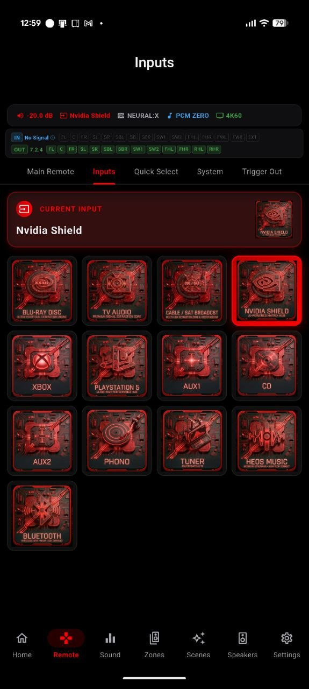

Swap the stock artwork for your own. Drop a Blu-ray cover on your player, your console's logo on the game input, a turntable on Phono - whatever makes the source obvious at a glance. Your icons show on the input tiles, the home dashboard and the Remote, and travel with your settings backup.

Every saved Scene can carry its own image as well. Open the Scene's Icon & Color sheet, upload an image, and crop it the same way. A "Movie Night" Scene can wear a film reel, "Vinyl Sunday" a record - so your one-tap setups are as recognizable as your inputs.
Getting started · Home Screen · Scenes · Sound · Graphic EQ · Speakers · Why a control is locked · The Assistant · Home Automation · Home Assistant dashboard · Zones · Remote · Radio (FM/AM) · On-Screen Display · Settings · Languages · Volume Controls · Backup & Restore · Now Playing & HEOS
One-time purchase, no ads, no subscriptions. Connect in under a minute.